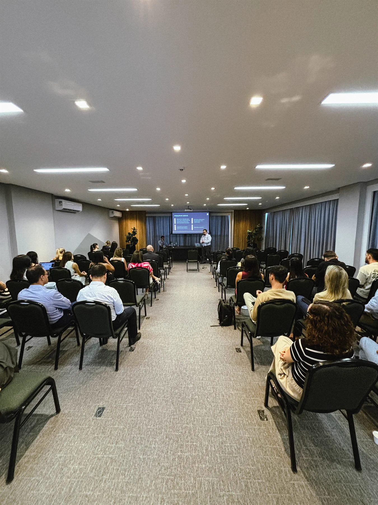
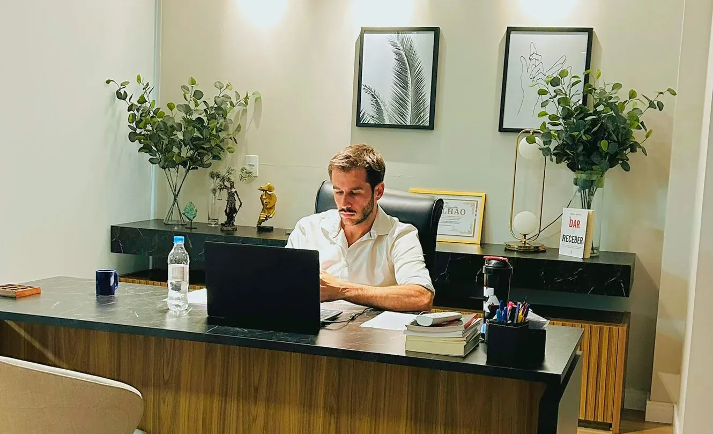
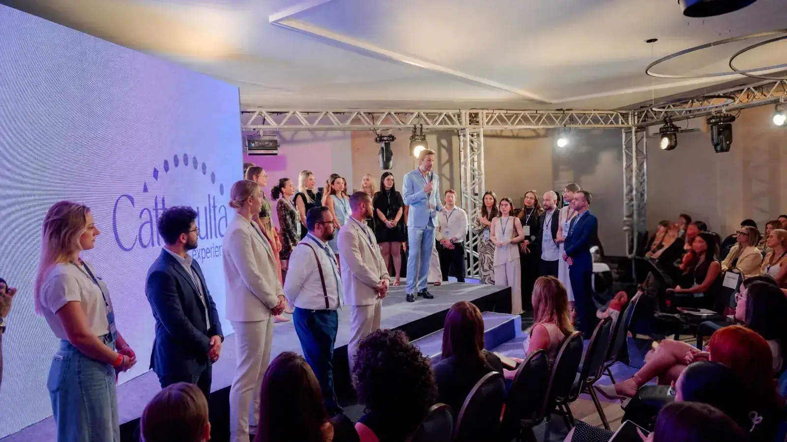

escritório do Brasil dedicado integralmente ao Direito na harmonização
advogados e especialistas trabalhando pela sua proteção
processos acompanhados pelo time em todo o Brasil
Um escritório inteiro dedicado à harmonização


Quem executa a jornada · +60 advogados e especialistas dedicados à harmonização
A harmonização ainda briga por credibilidade. Ter um escritório que luta ao seu lado muda como você é vista, e principalmente como você se sente.
Repare nas clínicas que você admira. Elas têm algo em comum.
Crescem em ritmo constante, sem sustos no meio do caminho. Não param por causa de um paciente insatisfeito. Não têm sócio brigando publicamente com sócio. Isso vem de um cuidado jurídico que acompanha o negócio todo mês, não de sorte.
Você não precisa se desgastar sozinha com paciente insatisfeito. Alguém pode assumir essa conversa difícil por você.
O que muda quando você para de correr atrás do problema.
O que a assessoria cobre todo mês
Você informa, o time assume
Você repassa o caso e um time de +60 pessoas assume a condução.
Atualização regulatória
Atualização contínua com as resoluções dos conselhos e da ANVISA.
Processos ilimitados
Processos ilimitados, judiciais, éticos, administrativos e trabalhistas, inclusos.
Paciente-problema
Resolução de paciente-problema antes de virar processo.
Time de verdade
Especialistas te atendendo. Não um chatbot, não um estagiário sozinho.
Cada caso resolvido gera aprendizado e prevenção para os próximos clientes.
O que acontece dentro dos seus 12 meses de assessoria
Termos personalizados para a sua clínica
Todos os documentos necessários para os procedimentos que você realiza.
Raio-x regulatório
Um diagnóstico de como a sua clínica está diante do seu conselho, Anvisa e Vigilância Sanitária, com o que precisa de ajuste.
Raio-x trabalhista da sua equipe
Revisão dos contratos e vínculos da sua equipe para você crescer sem surpresas trabalhistas lá na frente.
Análise das suas redes sociais
Revisão da sua bio e posts para você divulgar seu trabalho dentro das regras do seu conselho.
Análise da apólice de seguros
A gente lê a sua apólice e mostra exatamente o que ela cobre, antes de você precisar usar.
Gestão de relacionamento e crises
Quando um paciente fica insatisfeito ou um caso ganha repercussão, o time assume a conversa e conduz o caso por você.
Pack LGPD
Documentos e orientações para a sua clínica guardar dados e fotos de pacientes com segurança e dentro da lei.

A diferença entre ter um generalista e ter um time cuidando da clínica.
Advogado generalista usa o seu caso pra entender o que vai defender. O nosso time já resolveu casos parecidos mil vezes.
Quero saber se a assessoria serve para a minha clínicaGuilherme Juk Cattani
Poucos profissionais entendem tão profundamente os bastidores jurídicos, comerciais e regulatórios da harmonização quanto Guilherme Cattani.
Advogado especialista em Direito Médico Hospitalar e Direito Tributário, mestre em Gestão de Políticas Públicas, professor e empresário do setor da saúde e estética, Guilherme é fundador da Juk Cattani e da Academia da Independência.
Reconhecido como o primeiro advogado focado em harmonização facial do Brasil, é autor do primeiro livro de Direito na harmonização do país, coautor de outras 7 obras de estética facial e corporal e uma das vozes mais atuantes na defesa, orientação e valorização dos profissionais da área.
As clínicas que ele acompanha já não precisam de socorro. Precisam de alguém olhando pra frente com elas.
O que fica no caminho antes de fechar
Quero saber se a assessoria serve para a minha clínicaPara quem é a assessoria?
Para clínicas de harmonização que já estão atendendo e querem crescer com segurança. Se você está começando agora, temos soluções pensadas para esse momento.
Como funciona o contrato?
A assessoria tem duração de 12 meses, com valor mensal. Nesse período, as entregas ativas chegam sem você precisar pedir.
Atende a minha cidade?
Sim. A Juk Cattani atende clínicas de todo o Brasil. O atendimento é online, com um time dedicado acompanhando a sua clínica de perto, e os processos são conduzidos onde a sua clínica estiver.
Já tenho advogado, por que trocar?
Advogado generalista sabe leis. Advogado especializado sabe harmonização, conhece as resoluções do seu conselho, da Vigilância Sanitária e já viu dezenas de casos parecidos com o seu. As clínicas que crescem mais rápido têm um time que entende do mercado tanto quanto elas mesmas.
Meus pacientes são de confiança, nunca tive problema.
Os processos mais comuns não começam com má-fé. Começam com um resultado abaixo da expectativa, um print tirado de contexto, uma avaliação no Google. A Juk identifica esses sinais e resolve antes que virem notícia manchando a sua reputação.
A Assessoria pesa no meu orçamento agora.
Uma única indenização por resultado estético gira entre R$ 30 mil e R$ 200 mil. Uma exposição pública custa anos de reputação. A assessoria existe para essa conta nunca chegar até você.
Vai ser um processo burocrático pra começar?
Não vai. A assessoria começa a partir das informações que você já tem sobre sua clínica, procedimentos e equipe. O time se organiza, você continua atendendo.
O mercado está mais regulado, mas ainda não me atingiu.
A fiscalização não avisa. O PL 1027/2025, as resoluções recentes dos conselhos e as operações da ANVISA mostram que o ciclo de regulação está acelerado. Quem já tem esse cuidado sabe da mudança antes dela virar exigência.
Sua clínica já chegou lá. Falta ela ser protegida como as maiores são.
O cuidado jurídico contínuo que sustenta as clínicas mais respeitadas da harmonização, pelo time que mais entende de harmonização no Brasil.
Faça parte do time dos negócios mais valiosos da harmonização.
Acompanhe a Juk Cattani por dentro
Bastidores do escritório, casos reais e as mudanças nas regras da harmonização explicadas de um jeito que você aplica na sua clínica.
Seguir @jukcattaniadvogados